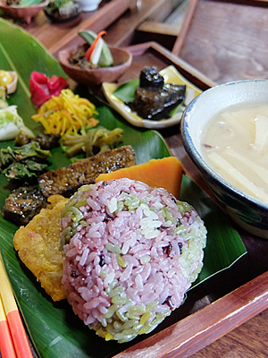
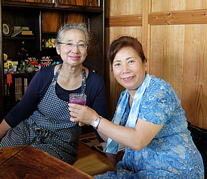

がらまんじゃくは、沖縄本島の中部、金武（きん）町にある古民家カフェです。カフェといっても、提供されるのは琉球宮廷料理の流れをくむ本格的なもの。昔から湧水地として知られ、古い歴史と豊かな自然をもつ金武町ですが、町面積の約６割が米軍基地であるという別の顔も持っています。

がらまんじゃくの店主、山城清子さんは、もともと首里の生まれ。ご主人の実家のある金武に2009年、店を開きました。料理歴30年以上、２人の子どもを育てながら常に沖縄の料理について学び、腕と舌を磨いてきた山城さん。そんな彼女がこの地でつくる料理は「原種」と「野草」にこだわった、あざやかで力強い品々です。
「種」には並々ならぬ思いを持っている私は、興味津々で訪ねました。「がらまんじゃく」と逞しい文字の看板がある入口からは、建物が見えません。月桃にパパイヤ、極楽鳥花、南国の植物が茂る石段を登っていくとまずは生まれたばかりの子猫ちゃんたちがお出迎え。
母猫ちゃんに「にゃにゃにゃにゃにゃ～（お邪魔します。あとで遊びましょうね」と声をかけていると、山城さんが現れました。
店の玄関を入ると、そこはまさに、沖縄の古民家。初めて入るのに、懐かしく、大きな「気」に包まれるような空間です。
囲炉裏を囲む席に座り、まずいただいたのは野草の酵素ジュース。瑞々しい野草の香りと、わずかな苦み、そして爽やかな甘みのドリンクは汗をすっとおさめてくれます。
さていよいよ、食事の登場です。私は動物性食品が入っていない「からまん定食 デトックス」を注文しました。これを食べると腸がいイキイキする！そうです。
普段、実は思ったものを食べられないため、外食をめったにしない私です。
いただいたのは定食の玄米ご飯は食べた瞬間、自分の内側から湧き上がる懐かしさと衝動で箸がとまらず、早く完食したいと思いました。スベリヒユや島らっきょ等々、「がらまんじゃく」で周辺で育つ滋味豊かな薬草や野菜が身体に染み込んでいくようです。
しみじみと感じるこのおいしさはどこからくるのか？――――。それは種。
山城さんと話して思ったことは、この「がらまんじゃく」でいただいた食べ物をもっと大切にしていかなくてはならない。遺伝子組み換えでなく、ちゃんと昔から脈々と受け継がれてきた種からできた食べ物を残すこと。食の現場がどんどん変化していくなか、これがこの５年で守れなければ、日本の食は崩壊してしまう。そう痛感しました。そして山城さんと「一緒に日本の食を守っていきましょう」と誓い、沖縄を後にしました。
Update / 2015.07

由井 寅子（ゆい とらこ）
「日本豊受自然農」代表。日本ホメオパシー界の第一人者としてのキャリアを基に、安心安全な作物にこだわり、無農薬・無化学肥料・自家採種に徹した独自の自然農法を確立、健康食品や化粧品の開発もてがける。ホメオパシー名誉博士。農民。